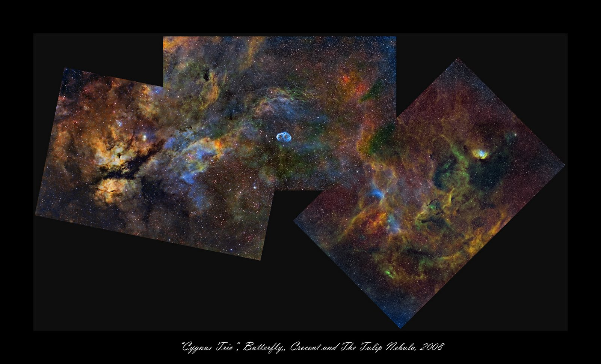

07 NOVIEMBRE 2008
Una postal desde Cygnus
El día de tu nacimiento, esta imagen fue publicada como la fotografía astronómica del día.

La imagen reúne tres nebulosas de la constelación del Cisne: la Nebulosa de la Mariposa, la Nebulosa Creciente y la Nebulosa del Tulipán. Una coincidencia bastante apropiada para esta fecha.
CONSULTAR PUBLICACIÓN ORIGINAL ↗